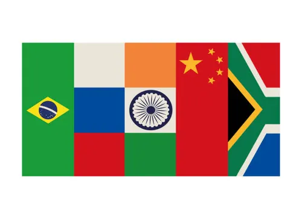

Welcome to BRICS
BRICS is an acronym for an economic and political alliance comprising Brazil, Russia, India, China, and South Africa. Established with the aim of fostering mutual growth, development, and cooperation, BRICS represents some of the world's most influential emerging economies.
Formation: The BRIC concept was introduced in 2001 by economist Jim O'Neill, with the formal alliance beginning in 2009. South Africa joined in 2010, transforming BRIC into BRICS.
Economic Impact: The BRICS nations collectively account for over 40% of the global population, approximately 25% of global GDP, and nearly 20% of global trade.
New Development Bank (NDB): Established in 2014, the NDB provides financing for infrastructure and sustainable development projects across member countries and beyond.
Annual Summits: BRICS hosts yearly summits where leaders discuss key global issues and strategies to enhance cooperation.
